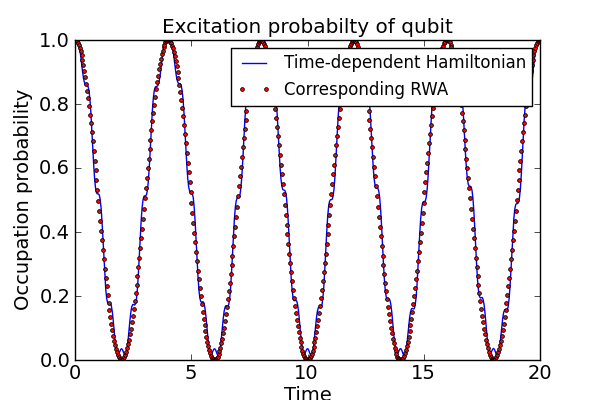

Rabi oscillations of an atom subject to a time-dependent classical driving field¶
This example illustrates how to evolve the master equation with time-dependent Hamiltonian.
#
# Rabi oscillations in a driven two-level system. This example show how to solve
# a problem with a arbitrarily time-dependent Hamiltonian.
#
from qutip import *
from pylab import *
import time
def hamiltonian_t(t, args):
""" evaluate the hamiltonian at time t. """
H0 = args[0]
H1 = args[1]
w = args[2]
return H0 + H1 * sin(w * t)
def qubit_integrate(delta, eps0, A, w, gamma1, gamma2, psi0, tlist):
# Hamiltonian
sx = sigmax()
sz = sigmaz()
sm = destroy(2)
H0 = - delta/2.0 * sx - eps0/2.0 * sz
H1 = - A * sx
H_args = (H0, H1, w)
# collapse operators
c_op_list = []
n_th = 0.0 # zero temperature
# relaxation
rate = gamma1 * (1 + n_th)
if rate > 0.0:
c_op_list.append(sqrt(rate) * sm)
# excitation
rate = gamma1 * n_th
if rate > 0.0:
c_op_list.append(sqrt(rate) * sm.dag())
# dephasing
rate = gamma2
if rate > 0.0:
c_op_list.append(sqrt(rate) * sz)
# evolve and calculate expectation values
expt_list1 = odesolve(hamiltonian_t, psi0, tlist, c_op_list, [sm.dag() * sm], H_args)
# Alternative: write the hamiltonian in a rotating frame, and neglect the
# the high frequency component (rotating wave approximation), so that the
# resulting Hamiltonian is time-independent.
H_rwa = - delta/2.0 * sx - A * sx / 2
expt_list2 = odesolve(H_rwa, psi0, tlist, c_op_list, [sm.dag() * sm])
return expt_list1[0], expt_list2[0]
#
# set up the calculation
#
delta = 0.0 * 2 * pi # qubit sigma_x coefficient
eps0 = 1.0 * 2 * pi # qubit sigma_z coefficient
A = 0.25 * 2 * pi # driving amplitude (reduce to make the RWA more accurate)
w = 1.0 * 2 * pi # driving frequency
gamma1 = 0.0 # relaxation rate
gamma2 = 0.0 # dephasing rate
psi0 = basis(2,1) # initial state
tlist = linspace(0, 5.0 * 2 * pi / A, 500)
start_time = time.time()
p_ex1, p_ex2 = qubit_integrate(delta, eps0, A, w, gamma1, gamma2, psi0, tlist)
print 'time elapsed = ' + str(time.time() - start_time)
fig=figure(figsize=[6,4])
plot(tlist, real(p_ex1), 'b', tlist, real(p_ex2), 'r.')
xlabel('Time')
ylabel('Occupation probability')
title('Excitation probabilty of qubit')
legend(("Time-dependent Hamiltonian", "Corresponding RWA"))
savefig('examples-time-dependence.png')
close(fig)
